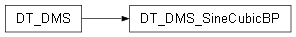

DT_DMS_SineCubicBP module¶

DT_DMS_SineCubicBP.py
Main orchestrator class for the Sine Wave Cubic B-Spline Digital Twin example. This class sets up the entire Digital Twin system:
Creates the Data source (Physical Twin)
Creates the Model (Digital Model)
Creates the Diagnosis Service
Links them using the Observer Pattern
Runs the simulation by pushing sine values
This is a minimal “Hello World” Digital Twin that demonstrates: Data -> Model -> Diagnosis with live charting and anomaly detection.
This is the Python equivalent of src/DT_DMS_SineCubicBP.java.
@author Zeeshan ALI, Mamadou Kaba TRAORE @version 1.0 (Python port)
- class DT_DMS_SineCubicBP.DT_DMS_SineCubicBP[source]¶
Bases:
DT_DMS- execute()[source]¶
Orchestrates the complete setup and execution of the Digital Twin system.
- Execution flow:
Create Model (Cubic B-Spline)
Create Diagnosis Service
Create Data source (Sine Values)
Register Model and Service as observers to the Data (Observer Pattern)
Link Service with Data for chart updates and diagnosis
Simulate incoming data by calling push_back() in a loop